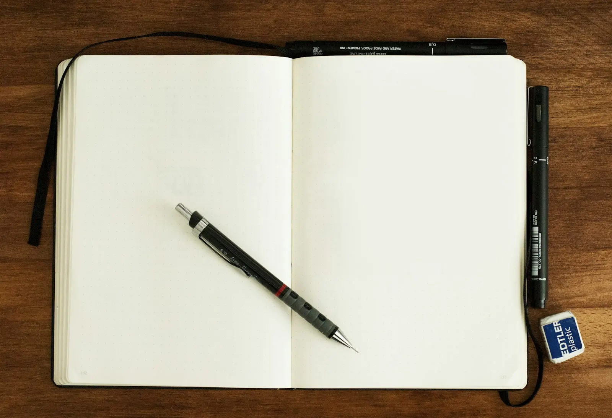
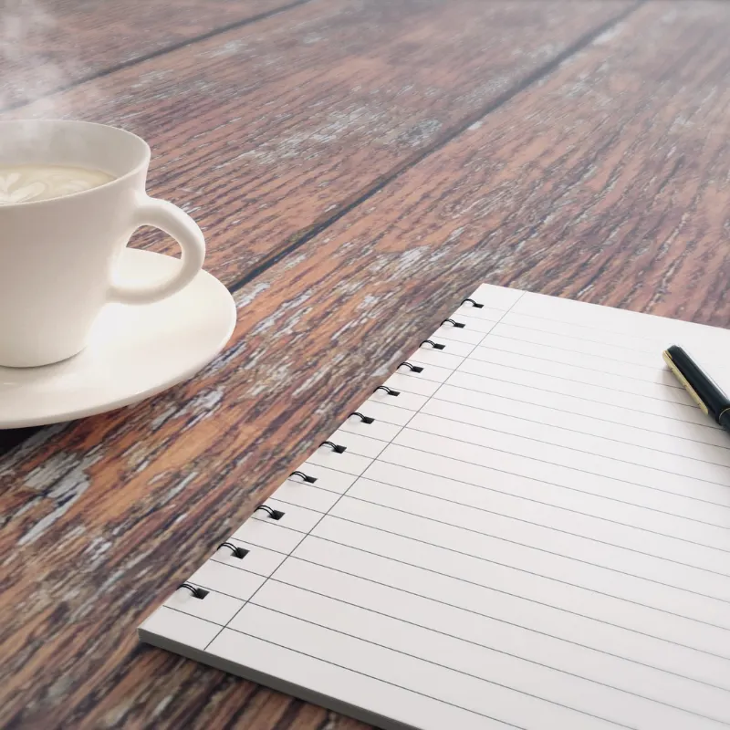
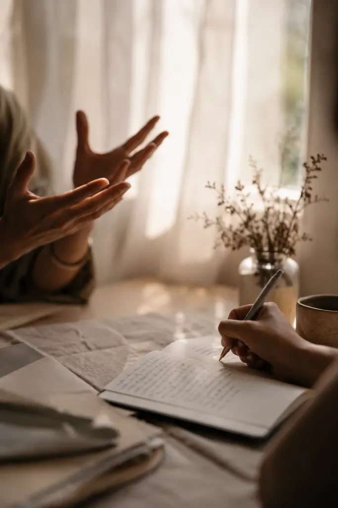
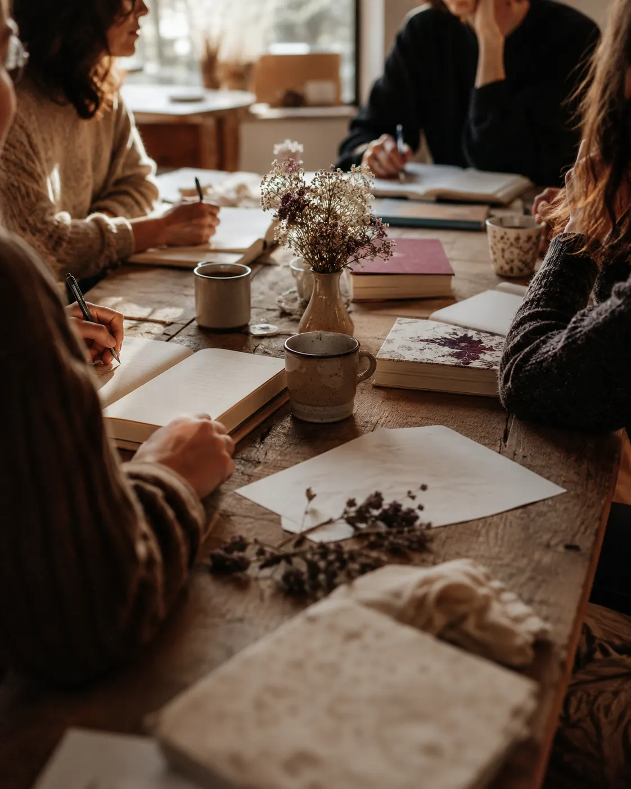
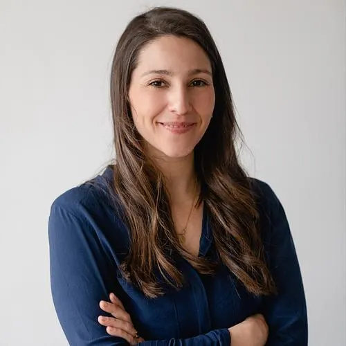
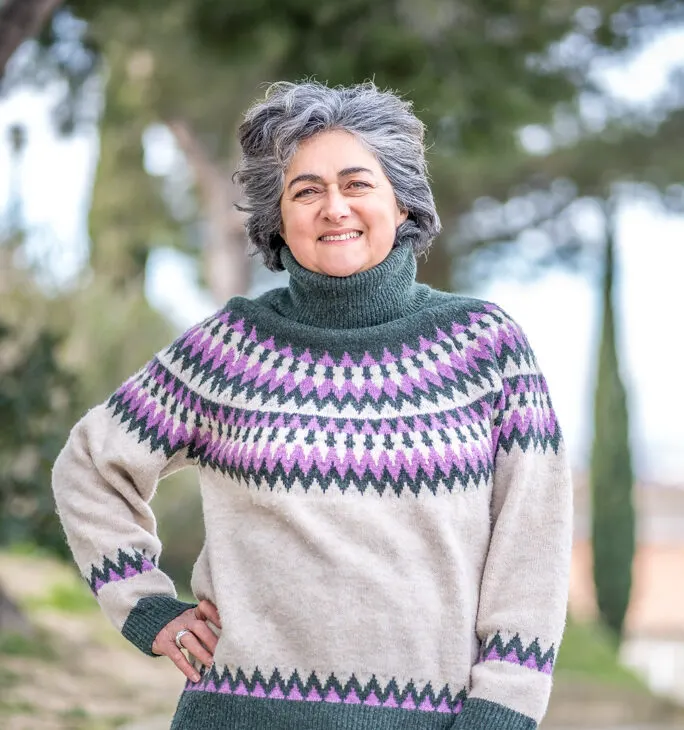

Toute l'année
Les ateliers mensuels
Deux heures pour écrire et partager, le jeudi après-midi au CMA Falque ou le mardi soir à La Briqueterie.
20 € · 17 € adhérent · forfaits trimestre et année
Deux heures, une page blanche et un groupe bienveillant. Au Laboratoire des Mots, on écrit pour le plaisir, sans prérequis : il suffit d'avoir envie.
Le Laboratoire des Mots est une association marseillaise cofondée par Cécilia Tarek et Marie-Paule Tooms. Ensemble, elles ouvrent des espaces d'écriture fondés sur la bienveillance, l'écoute et la créativité.
Ici, personne ne note vos textes. On joue avec les mots, on explore l'imaginaire, on ose lire à voix haute si on le souhaite. Débutant ou plume confirmée, chacun trouve sa place, à son rythme.
Animer un atelier, c'est donner de l'âme : faire naître l'élan d'écrire et le laisser circuler entre les participants.
Un rendez-vous régulier, une journée pour aller plus loin, ou votre histoire mise en mots : choisissez votre porte d'entrée.

Deux heures pour écrire et partager, le jeudi après-midi au CMA Falque ou le mardi soir à La Briqueterie.
20 € · 17 € adhérent · forfaits trimestre et année

Une parenthèse d'une journée, deux ateliers et un déjeuner partagé, pour laisser mûrir une idée et la réécrire. 8 participants maximum.
50 € · 40 € tarif réduit

Vous racontez, nous écoutons. En 6 à 10 heures d'entretien, votre histoire devient un texte à transmettre.
Premier échange gratuit
Le jeudi, 14h – 16hCMA Falque, 36 rue Falque, 13006 Marseille
Le mardi, 19h – 21hLa Briqueterie, 19 place Jean Jaurès, 13005 Marseille
| Formule | Tarif |
|---|---|
| L'atelier | 20 € |
| L'atelier, adhérent | 17 € |
| Forfait trimestre du jeudi (6 ateliers) | 100 € |
| Forfait année (18 ateliers) | 290 € |
| Adhésion annuelle | 15 € |

Nous intervenons dans les résidences pour seniors, auprès de la Ligue contre le cancer et dans les lieux associatifs. L'écriture y devient un moment de lien, de mémoire et de fierté.

Autrice de L'Odyssée d'une âme (2016) et Au seuil des rêves (2024), Cécilia anime les ateliers du jeudi et du mardi et accompagne les projets de biographie.

Diplômée en animation d'ateliers d'écriture en 2020, Marie-Paule anime des ateliers sans prérequis depuis 2019 et organise les journées d'écriture du samedi.